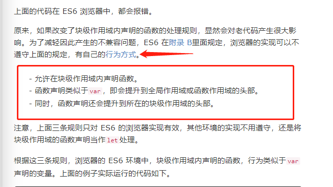
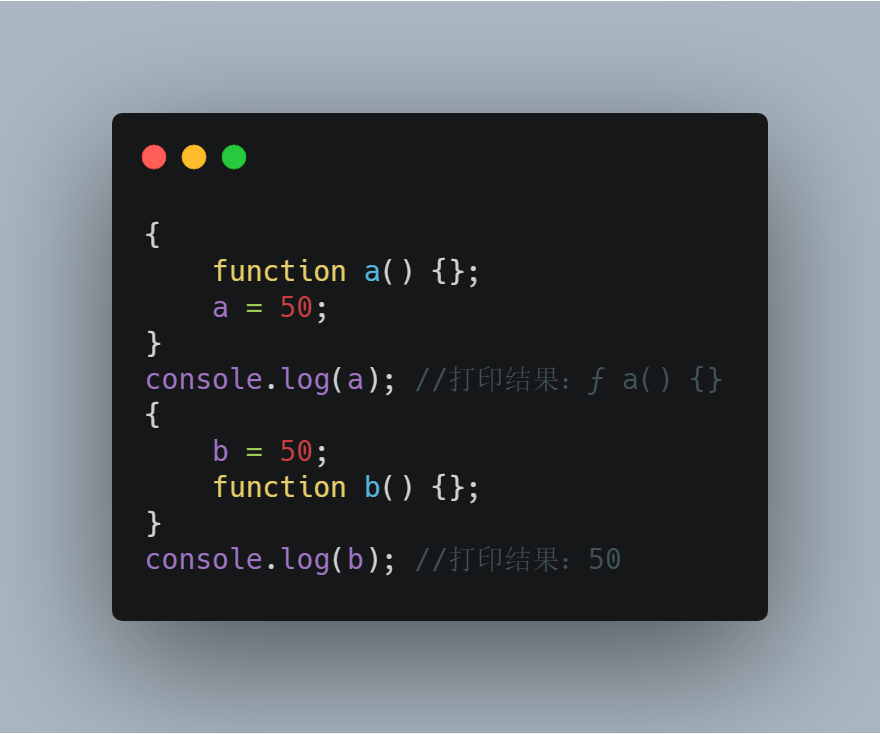
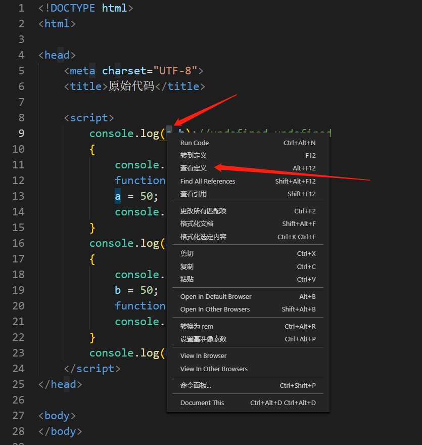
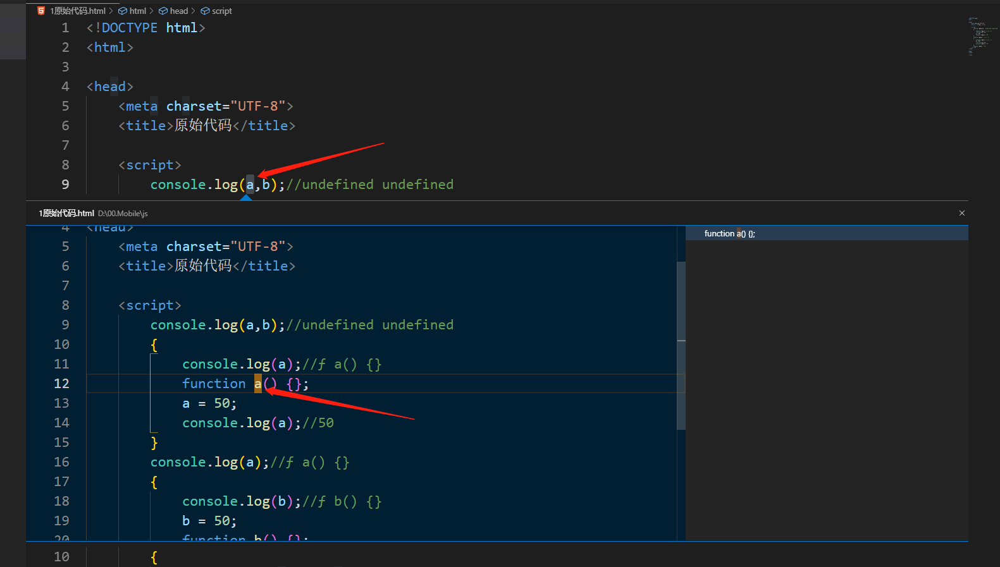
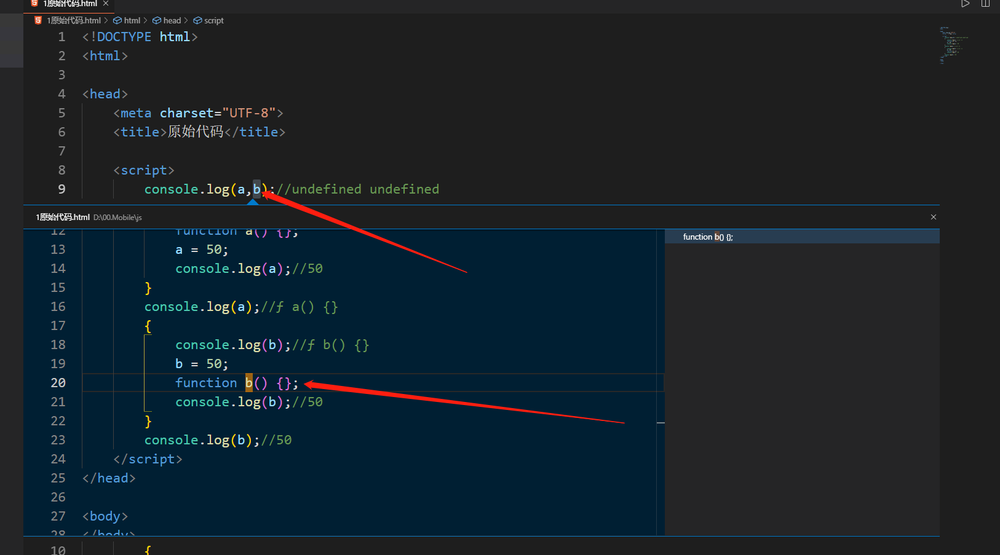
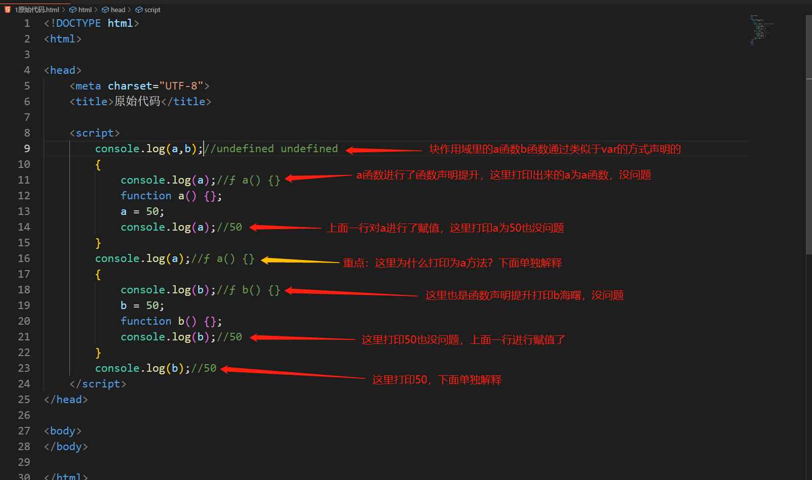
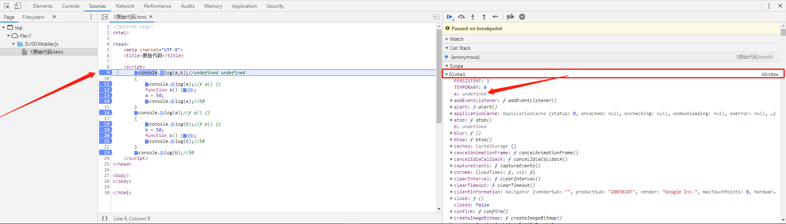
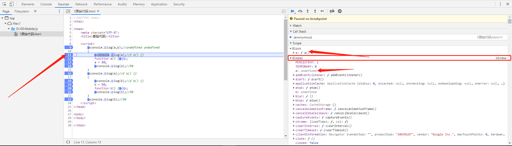
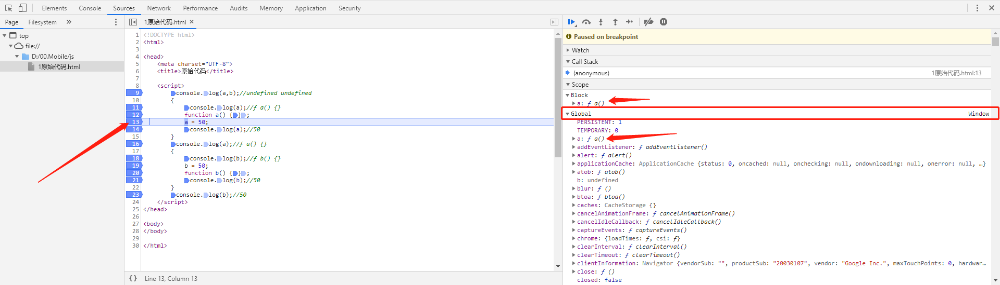
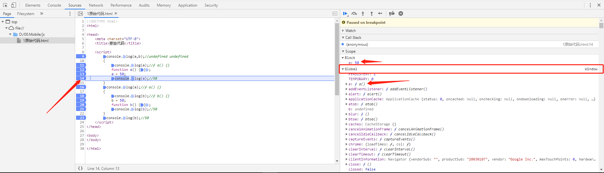

前两天遇到的问题，经过很多网友的深刻讨论，终于有一个相对可以解释的通的逻辑了，然后我仔细研究了一下相关的点，顺带研究了一下js中的隐式变量。
一遇到隐式变量，我们去百度一下，都会看见这样一句话，隐式变量是全局变量，在函数中用隐式变量也是全局变量，但是在函数中用var变量是局部变量，那我们来具体看下隐式变量到底与var变量有什么区别，下面我们来通过一些代码来探究隐式变量与var变量的区别。
代码1：
var变量：
console.log(a);//undefined
var a = 100;代码2：
隐式变量：
console.log(a);//Uncaught ReferenceError: a is not defined
a = 100;看上面的代码我们发现var变量a是存在变量声明提升的，也就是代码1相当于下面的代码：
var a;
console.log(a);
a = 100;这与我们以前了解的那个var变量是一样的，变量声明提升还是那个变量声明提升，并不会改变，这里如果想详细了解变量提升的，推荐这篇文章大家可以看一下。然后我们继续看代码2，隐式变量在前面打印变量a时会报错，那这里我们是不是可以猜测，隐式变量是不是不存在变量提升，当然以前好像也没有人说过隐式变量存在声明提升，可能我一厢情愿的认为隐式变量是全局变量就存在声明提升。然后我们继续看在函数中，代码块中声明的隐式变量是不是跟上面全局定义的隐式变量一样，不存在声明提升。
代码3：
函数中的var变量：
console.log(a);//Uncaught ReferenceError: a is not defined
function b() {
console.log(a);//undefined
var a = 100;
}
b(); 代码4：
函数中的隐式变量：
console.log(a);//Uncaught ReferenceError: a is not defined
function b() {
console.log(a);//Uncaught ReferenceError: a is not defined
a = 100;
}
b();我们来看上面的代码3和代码4，我们发现代码3，在第一行就报错，因为var在函数内部定义的变量属于局部变量，全局是访问不到的，然后把第一行注释掉再运行，发现第三行打印出的a是undefined，证明var变量在函数中进行了变量声明提升。我们来看代码4，在函数内定义了一个隐式变量，然后第一行就会报错，a是未定义，然后把第一行注释掉再运行，发现第三行也还是报错a未定义，这里是不是就说明隐式变量并不会有变量声明提升这种操作，换一句话说，就是隐式变量类似于函数一样，声明和定义是一起的，只有执行了这行代码，才能引用访问这个变量，这里推荐一篇关于变量生命周期的文章，可以细读一下，然后我们再看一下代码块中定义的var变量和隐式变量：
代码5：
代码块中的var变量：
console.log(a);//undefined
{
console.log(a);//undefined
var a = 100;
}代码6：
代码块中的隐式变量：
console.log(a);//Uncaught ReferenceError: a is not defined
{
console.log(a);//Uncaught ReferenceError: a is not defined
a = 100;
}然后我们看代码块中的var变量，是存在声明提升的，然后隐式变量是不存在声明提升的，所以上面访问都会报错。
上面探究完隐式变量我们再稍微看下代码块中的函数声明提升：
代码7：
console.log(a);//undefined
{
function a(){};
console.log(a);//ƒ a(){}
}
console.log(a);//ƒ a(){}我们看上面的代码，我们都知道函数是js中的"一等公民"，优先级是最高的,那在上面这个代码中，函数是否提升到了块作用域的外面呢，如果我说提升了，那你从块作用域最外面调用你会发现报错，a不是一个方法：
a();//Uncaught TypeError: a is not a function
{
function a(){};
}然后这样之前的我就得出一个结论，函数声明提升并没有将函数提升到最外层，那就要问那上面我们打印的a为undefined，为什么不是报错a未定义呢，根据阮一峰老师的这篇文章的描述，我们可以得出一个结论：

然后我们再回过头来看代码块中同时存在同名的隐式变量和函数时会怎样：

首先我们来看上面这个代码，此时如果我们再最外层的上面打印a和b你会发现会打印出来是undefined：
代码8：
console.log(a,b);//undefined undefined
{
console.log(a);//ƒ a() {}
function a() {};
a = 50;
console.log(a);//50
}
console.log(a);//ƒ a() {}
{
console.log(b);//ƒ b() {}
b = 50;
function b() {};
console.log(b);//50
}
console.log(b);//50我们看上面的代码，你会发现最前面打印a和b都是undefined，通过前面对隐式变量和函数声明的探究我们可以知道此时外面的a和b都是函数声明定义的，另外我们从侧面也可以看出这一点，vscode有一个功能，是可以查看变量是谁定义的，那我们来看一下：



此时我们发现vscode分析出来最上面的a和b都是a和b函数定义的，根据我们上面的探究，既然隐式变量不存在变量声明提升，那只能函数定义的，然后通过对函数的探究可以证实这一点，同时配上vscode分析出来的结果，也证实了这一点，首先可以确定，最外层的全局的a和b都是函数定义的。然后我们再继续往下看，最开始的a和b打印undefined没问题，

然后我们来看下上面图片上第16行打印的结果为什么是a方法，通过我上篇文章一行一行的调试你会发现，此时代码块中的a其实是被限制在块作用域里面的，并不是全局的变量，此时其实a = 50这行代码不是隐式变量，因为a已经被函数定义过了，那a = 50也就是对之前定义过的变量赋值了，所以此时
a = 50不是隐式变量，然后对之前定义的a赋值，在代码块中打印出来为50，然后出了块作用域打印出来的结果为方法a，通过代码一步步的调试你会发现全局的a，只有在执行a方法的代码时才会把块作用域赋的值同步到全局。
第一步：此时全局的a为undefined，此时a是代码块中函数定义的：

第二步：此时我们发现出来了一个块作用域，因为代码块中的函数提前了，此时代码块中的a的值为a方法，而全局的a还是undefined，没什么问题

第三步：此时我们会发现当函数a这一行代码走完之后，块作用域里面的a跟全局的a都变成了a方法，也就是说想要让块作用域中的a的值同步到全局，必须让代码执行到定义a方法的下一行才可以，要不然代码块中的a的值是不会同步到代码块外面的

第四步：到这一步我们会发现块作用域中的a变成了50，而全局的a还是a方法，根据上一步得到的结论，此时只要在a = 50这行代码后面再执行一次方法a，a = 50就会被同步到全局，此时验证一下也确实是这样

然后出块作用域你会发现打印a为a方法，此时你就不会好奇为什么打印结果是a方法了，因为块作用域中的a并没有同步到全局，而b打印50，是因为b = 50后面执行了一行b方法，将b同步到了全局。到这里我们也就了解为什么两个代码只是换了一下函数的位置打印结果过就完全不同了，然后看文章的时候如果发现有什么错误或写的不好的地方，还请指正，我会立即做出修改。